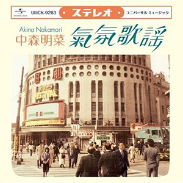

翻唱专辑：第6张
发行年份：2009年
发行日期：6月24日
| 歌名 | 作词 | 作曲 | 编曲 |
|---|---|---|---|
| 氣氛歌謡 Opening (伴奏) | 村田陽一 | 村田陽一 | |
| 経験 (辺見マリ的翻唱曲) | 安井かずみ | 村井邦彦 | 村田陽一 |
| 恋の季節 (ピンキーとキラーズ的翻唱曲) | 岩谷時子 | いずみたく | 村田陽一 |
| 夢は夜ひらく (藤圭子的翻唱曲) | 石坂まさを | 曾根幸明 | 村田陽一 |
| 他人の関係 (金井克子的翻唱曲) | 有馬三恵子 | 川口真 | 村田陽一 |
| 面影 (しまざき由理的翻唱曲) | 佐藤純弥 | 菊池俊輔 | 村田陽一 |
| 雨の御堂筋 (欧陽菲菲的翻唱曲) | 林春生 | B. Bogle・M. Taylor・D. Wilson・J. McGee・J. Durrill | 村田陽一 |
| ラブユー東京 (黒沢明とロス・プリモス的翻唱曲) | 上原尚 | 中川博之 | 村田陽一 |
| 絹の靴下 (夏木マリ的翻唱曲) | 阿久悠 | 川口真 | 村田陽一 |
| コモエスタ赤坂 (ロス・インディオス的翻唱曲) | 西山隆史 | 浅野和典 | 村田陽一 |
| 非情のライセンス (野際陽子的翻唱曲) | 佐藤純弥 | 菊池俊輔 | 村田陽一 |
| 伊勢佐木町ブルース (青江三奈的翻唱曲) | 川内康範 | 鈴木庸一 | 村田陽一 |
| 氣氛歌謡 Ending (伴奏) | 村田陽一 | 村田陽一 |
录制片段（初回限定盤DVD）
| 歌名 | 作词 | 作曲 |
|---|---|---|
| 他人の関係 | 有馬三恵子 | 川口真 |
| 雨の御堂筋 | 林春生 | B. Bogle・M. Taylor・D. Wilson・J. McGee・J. Durrill |
| 伊勢佐木町ブルース | 川内康範 | 鈴木庸一 |
首发规格：CD: UMCK-1315，CD+DVD: UMCK-9283，数码下载
唱片公司：Universal Sigma
排行榜：Oricon公信榜专辑周榜第30位
再发行：2017年5月3日 - UHQCD: UPCH-7281